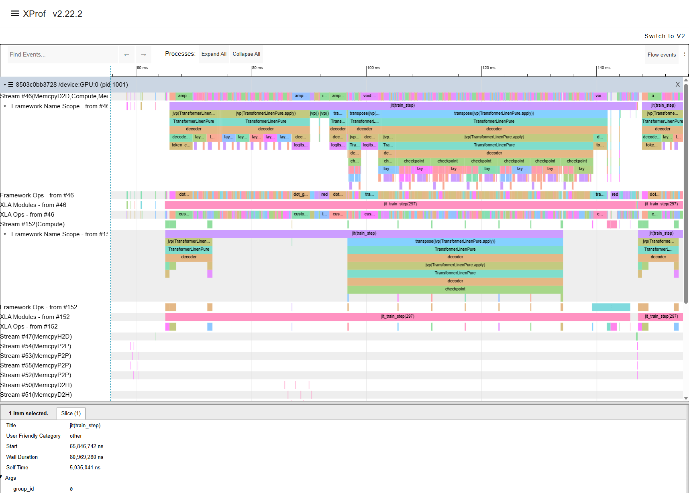

ISPASS 2026 Workshop
This tutorial walks through an end-to-end example of using Hespas, a distributed ML performance estimation tool built on StableHLO, to estimate the performance of a 100M parameter LLM model (LLaMA 3 architecture) on 4× A100 SXM 40GB GPUs.
We demonstrate how the same StableHLO workload representation that is used for running the refernce run can be targeted with analytical and profiling-based (XLA) estimators and then fed into a network simulator to produce end-to-end distributed training time estimates.
Obtaining the Workload — get a StableHLO workload
Reference Run (Ground-Truth) — run a reference directly through XLA
Analytical Estimation — estimate compute performance analytically
XLA Profiling Estimation — estimate compute performance on real hardware
Network Simulation with ASTRA-sim — simulate distributed execution
Prerequisites
Python 3.11+
4 × NVIDIA A100 GPUs (for StableHLO export, XLA profiling and reference run)
xla-translateandhlo_runner_mainonPATHcmake,protoc,bc(for building ASTRA-sim)
Note
All outputs of the steps requiring GPUs are provided separately so the end-to-end simulation can be run. However if you have access to a GPU the easiest environment is the provided Docker image with preinstalled JAX and XLA. Note the Docker image is ~20GB. See Estimators for Docker setup instructions.
Installation
git clone https://github.com/imec-int/hespas.git
cd hespas
pip install -e .
Verify:
hespas_chakra_gen --help
Obtaining the Workload
Both unoptimized and XLA-optimized StableHLO MLIR files are available in the hespas_workloads repository:
git clone https://github.com/imec-int/hespas_workloads.git \
-b llama-3-4 --single-branch hespas_workloads
The llama-3-4 branch contains workloads sharded across 4 devices at
various model sizes, with both *-opt.mlir (XLA-optimized) and unoptimized
variants. We will use llama3-100m-opt.mlir — a 100M parameter model using
the LLaMA 3 architecture.
To export and optimize workloads yourself, see Exporting a Workload from Scratch and Optimizing the Exported Workload below.
Workload Analysis
Use hespas_mlir_analyzer to inspect the operator composition of a workload:
hespas_mlir_analyzer hespas_workloads/llama3-100m.mlir # top-level ops
hespas_mlir_analyzer -e hespas_workloads/llama3-100m.mlir # expand functions or fusions
Unoptimized (llama3-100m.mlir) — 5124 ops, 35 unique:
stablehlo.multiply............: 1120
stablehlo.add.................: 778
stablehlo.convert.............: 607
stablehlo.reduce..............: 311
stablehlo.broadcast_in_dim....: 276
stablehlo.all_reduce..........: 272
stablehlo.dot_general.........: 208
stablehlo.all_gather..........: 100
...
Optimized — top-level (llama3-100m-opt.mlir) — 1957 ops, 14 unique:
mhlo.fusion...................: 831
mhlo.bitcast..................: 747
stablehlo.slice...............: 241
stablehlo.reduce_scatter......: 51
stablehlo.all_gather..........: 12
stablehlo.all_reduce..........: 4
...
Optimized — expanded (-e flag) — 12022 ops, 36 unique:
stablehlo.convert.............: 2239
mhlo.bitcast..................: 1960
stablehlo.multiply............: 1299
stablehlo.broadcast_in_dim....: 1293
stablehlo.constant............: 1041
stablehlo.add.................: 895
stablehlo.reduce..............: 467
stablehlo.dot.................: 88
stablehlo.dot_general.........: 78
stablehlo.reduce_scatter......: 51
stablehlo.all_gather..........: 12
stablehlo.all_reduce..........: 4
...
Key differences after optimization:
Kernel fusion — XLA fuses 5124 individual ops into 831
mhlo.fusionregions, each representing a single GPU kernelCommunication restructured — 272 all-reduce → 4 all-reduce + 51 reduce-scatter (XLA combines and decomposes collectives)
Exporting a Workload from Scratch
The .mlir files in the workloads repository were exported from
MaxText — Google’s reference JAX LLM
training codebase. The export captures the XLA compilation of a training step
after SPMD partitioning but before backend optimizations, then translates it
to StableHLO.
The process has three stages:
JAX/MaxText compiles a training step with XLA flags that dump intermediate HLO
XLA’s SPMD partitioner produces the sharded HLO (one program per device)
``xla-translate`` converts the sharded HLO back to StableHLO MLIR
The export requires MaxText and JAX installed with GPU support, and only requires a single node with the target number of GPUs — you do not need the full multi-node topology. For example, to export a model sharded across 4 devices, a single 4-GPU machine is sufficient.
Create a file called llama3-100m.yml with the 100M parameter model
configuration using the LLaMA 3 architecture (the base_config directive
inherits MaxText’s built-in defaults):
base_config: "base.yml"
base_emb_dim: 576
base_num_query_heads: 9
base_num_kv_heads: 9
base_num_decoder_layers: 7
base_mlp_dim: 2016
head_dim: 128
mlp_activations: ["silu","linear"]
vocab_size: 128256
enable_dropout: False
logits_via_embedding: False
normalization_layer_epsilon: 1.0e-5
rope_max_timescale: 500_000
decoder_block: "llama2"
Then run the full export:
set -e
# --- Paths ---
OUTPUT_PATH="/workspace/out"
MAXTEXT_PKG_DIR="/opt/maxtext/src/MaxText"
# --- Auto-detect GPUs and set topology ---
NUM_DEVICES=$(nvidia-smi -L | wc -l)
if [ "$NUM_DEVICES" -lt "8" ]; then
TOPOLOGY="a3-$NUM_DEVICES"
else
TOPOLOGY="a3"
fi
RUN_NAME="llama3-100m-${TOPOLOGY}-$(date +%Y-%m-%d-%H-%M)"
mkdir -p $OUTPUT_PATH/$RUN_NAME
# --- XLA flags: dump HLO at key compilation stages ---
# Rematerialization is disabled so the exported graph matches the logical computation.
export JAX_ENABLE_COMPILATION_CACHE=false
export XLA_FLAGS="--xla_dump_to=$OUTPUT_PATH/$RUN_NAME/HLO_dumps/
--xla_dump_hlo_pass_re=before_optimizations|after_spmd_partitioner
--xla_dump_hlo_module_re=jit_train_step
--xla_gpu_enable_latency_hiding_scheduler=true
--xla_gpu_enable_triton_gemm=false --xla_gpu_enable_command_buffer=''
--xla_gpu_enable_highest_priority_async_stream=true
--xla_gpu_all_reduce_combine_threshold_bytes=134217728
--xla_gpu_all_gather_combine_threshold_bytes=134217728
--xla_gpu_reduce_scatter_combine_threshold_bytes=67108864
--xla_gpu_enable_pipelined_all_gather=true
--xla_gpu_enable_pipelined_reduce_scatter=true
--xla_gpu_enable_pipelined_all_reduce=true
--xla_gpu_enable_while_loop_double_buffering=true
--xla_gpu_enable_all_gather_combine_by_dim=false
--xla_gpu_enable_reduce_scatter_combine_by_dim=false
--xla_disable_hlo_passes=rematerialization"
# --- Compile training step (triggers HLO dump) ---
python3 -m MaxText.train_compile llama3-100m.yml \
run_name=$RUN_NAME \
ici_fsdp_parallelism=$NUM_DEVICES \
base_output_directory=$OUTPUT_PATH \
compile_topology=$TOPOLOGY hardware=gpu \
compile_topology_num_slices=1 \
max_target_length=4096 per_device_batch_size=1 \
attention=dot_product use_iota_embed=true \
remat_policy=minimal_with_context \
enable_checkpointing=false scan_layers=false \
weight_dtype=bfloat16 grad_dtype=bfloat16 \
quantization_local_shard_count=$NUM_DEVICES \
compiled_trainstep_file=$OUTPUT_PATH/$RUN_NAME/compiled_trainstep.pkl
# --- Convert SPMD-partitioned HLO → StableHLO MLIR ---
PARTITIONED_HLO=$(find $OUTPUT_PATH/$RUN_NAME/HLO_dumps/ \
-name '*jit_train_step.after_spmd_partitioner.txt')
xla-translate --hlo-text-to-stablehlo \
--hlo-import-all-computations=true \
--hlo-flatten-computation-args-result=true \
--o=$OUTPUT_PATH/$RUN_NAME/compiled_trainstep.spmd.mlir \
$PARTITIONED_HLO
echo "Export completed: $OUTPUT_PATH/$RUN_NAME/compiled_trainstep.spmd.mlir"
The export produces the following output in /workspace/out/<run_name>/:
/workspace/out/llama3-100m-a3-4-<date>/
├── compiled_trainstep.spmd.mlir ← StableHLO MLIR (input to Hespas)
├── compiled_trainstep.out ← Export stdout log
├── compiled_trainstep.err ← Export stderr log
└── HLO_dumps/ ← Details
The key file is compiled_trainstep.spmd.mlir — the full sharded training
step in StableHLO with compute ops (matmuls, elementwise) interleaved with
communication ops (all-reduce, all-gather, reduce-scatter). This is the input
to Hespas.
Note
Once exported, Hespas can estimate performance for arbitrary system
configurations using just the .mlir file — the GPUs are only needed
for the export step itself.
Optimizing the Exported Workload
The raw exported StableHLO contains unoptimized ops. To get more accurate results from the analytical (roofline) estimator, run XLA’s optimization passes — kernel fusion, op combining, etc. — on the exported MLIR. This produces a more realistic op structure without requiring GPU execution.
The xla_optimiser.sh script in scripts/ handles this. It needs the
GPU target config from the export’s HLO dump:
bash scripts/xla_optimiser.sh \
-i /workspace/out/llama3-100m-a3-4-<date>/compiled_trainstep.spmd.mlir \
-o /workspace/out/llama3-100m-a3-4-<date>/compiled_trainstep.spmd.opt.mlir \
-g /workspace/out/llama3-100m-a3-4-<date>/HLO_dumps/module_0014.jit_train_step.gpu_target_config.pbtxt \
-d async-collective-conversion,gpu-reduce-scatter-combiner,spmd-partitioning,spmd-partitioner,spmd_partitioner
The -d flag disables passes that are not applicable post-SPMD-partitioning
or that would interfere with the communication structure. The output file
compiled_trainstep.spmd.opt.mlir can then be used in place of the
unoptimized .mlir in subsequent Hespas commands.
Reference Run (Ground-Truth)
To obtain ground-truth execution times, run the full model directly through XLA:
# Translate StableHLO → HLO
xla-translate --stablehlo-to-hlo-text \
-o llama3-100m.hlo hespas_workloads/llama3-100m.mlir
# Compile and execute on all 4 GPUs
hlo_runner_main \
--num_repeats=5 \
--profile_execution=true \
--hlo_argument_mode=uninitialized \
llama3-100m.hlo
This performs full XLA compilation (including all optimizations) and runs the sharded model across all available GPUs, including collective communications over NVLink. Output looks like:
## Execution time, file=llama3-100m.hlo repeat=0 duration=827655700ns
## Execution time, file=llama3-100m.hlo repeat=1 duration=86603775ns
## Execution time, file=llama3-100m.hlo repeat=2 duration=83090431ns
## Execution time, file=llama3-100m.hlo repeat=3 duration=75189247ns
## Execution time, file=llama3-100m.hlo repeat=4 duration=73478141ns
73–87 ms per training step on 4× A100 SXM 40GB.
Alternatively, you can run actual training steps with MaxText.train on
synthetic data, which can produce XProf traces for detailed kernel-level
analysis.
{kind=link}

XProf trace showing the execution timeline of one training step.
Analytical Estimation
The Roofline Model
The analytical estimator uses a roofline model of the compute node. For each operator, the roofline model takes the maximum of the compute time (FLOPs / peak FLOPS) and the memory time (bytes accessed / memory bandwidth), giving an effective estimation of execution time.
The hardware parameters are specified in a node configuration file. For the
A100 SXM 40 GB used in this tutorial, the config is at
configs/nodes/A100_SXM_40GB/roofline/config.json:
{
"perf_estimator": {
"method": "roofline",
"hardware": {
"peak_flops": 9.7e12,
"per_datatype_flops": {
"f64": 19.5e12,
"f32": 19.5e12,
"tf32": 156e12,
"bf16": 312e12,
"f16": 312e12,
"i8": 624e12
},
"memory_bandwidth": 1555e9
}
}
}
peak_flops— default scalar FLOPS (used when no datatype-specific entry matches)per_datatype_flops— peak FLOPS for tensor-core accelerated datatypes (e.g. bf16 at 312 TFLOPS on A100)memory_bandwidth— peak HBM bandwidth in bytes/s (1555 GB/s for A100 SXM 40 GB)
Pre-built configs for other common GPUs are provided under configs/nodes/.
Running the Estimation
hespas_chakra_gen configs/nodes/A100_SXM_40GB/roofline/config.json \
--mlir_file hespas_workloads/llama3-100m-opt.mlir \
--output output/roofline \
--split_fn individual_split \
--merge \
--num_npus 4 \
--log-level info
Output:
Cache hits: 186
Basic block reuse rate: 0.694 (186/268)
Operator reuse factor: 0.449 (5613/12498)
FLOPS/s utilisation: 0.362
Memory bandwidth utilisation: 0.847
Average FLOPS/s: 108.941 TFLOPS/s
Average Memory Bandwidth: 1.318 TB/s
Compute Runtime Estimation: 57991.764 us
Op time proportions:
mhlo.fusion: 0.827
mhlo.bitcast: 0.165
stablehlo.slice: 0.003
stablehlo.transpose: 0.002
mhlo.copy: 0.001
...
This produces the Chakra execution traces — the input to the network simulator (ASTRA-sim) in the Network Simulation with ASTRA-sim section:
dev.*.et— Chakra execution trace files (one per device)comm_group.json— communication group topologymodule_stats.json— per-module estimation statistics
Compute Runtime Estimation: ~58 ms. This is the estimated compute time only — communication latency (all-reduce, all-gather, reduce-scatter) is not modeled here. That is handled by the network simulator (ASTRA-sim) using the Chakra traces produced alongside this estimate.
FLOPS/s utilisation: 0.362, Memory bandwidth utilisation: 0.847. These tell you the workload’s roofline character. With memory bandwidth utilisation at 84.7% and FLOPS utilisation at 36.2%, this workload is memory-bound — most ops are limited by how fast data can be moved to and from HBM, not by the GPU’s arithmetic throughput.
Average FLOPS/s: 108.9 TFLOPS/s, Average Memory Bandwidth: 1.32 TB/s. These are the effective throughput values averaged across all ops, useful for comparing across hardware targets or model sizes.
Cache reuse. The basic block reuse rate (69.4%) and operator reuse factor (44.9%) show how many blocks and ops were identical to previously estimated ones. When Hespas encounters a block or operator it has already estimated, it reuses the cached result instead of re-running the estimation — this speeds up the analysis especially for slower estimators e.g. profiling-based or simulation-based.
Note
Use the XLA-optimized workload (llama3-100m-opt.mlir) for
the analytical estimator. Running on the unoptimized workload produces a
215 ms estimate — far from the reference — because individual
unfused ops are heavily memory-bound. The optimized workload with fused
kernels gives a much more representative result.
XLA Profiling Estimation
The XLA estimator compiles each compute region using XLA and profiles it on real GPU hardware.
hespas_chakra_gen configs/nodes/profiling/xla/config.json \
--mlir_file hespas_workloads/llama3-100m.mlir \
--output output/xla \
--num_npus 4 \
--split_fn linear_split \
--log-level info
Output:
Cache hits: 303
Basic block reuse rate: 0.808 (303/375)
Operator reuse factor: 0.55 (2819/5123)
Total estimator time taken vs cached time: 372.45 s vs total time (without caching): 1861.957 s (79.997 % reduction)
Compute Runtime Estimation: 104717.824 us
The compute runtime estimation is ~105 ms. This is not running communication collectives but is already higher than the refrence run. XLA profiles each block individually, incurring overhead not present in a fused end-to-end run. Note the cached block reuse is impactful here: caching reduces the profiling time by 80% (from ~31 minutes to ~6 minutes).
Pre-profiled Chakra traces for the LLaMA 3 models are available in the
llama-3-4-xla branch of the workloads repository, organized by GPU type:
git clone https://github.com/imec-int/hespas_workloads.git \
-b llama-3-4-xla --single-branch hespas_workloads
The traces are located at e.g. hespas_workloads/A100/llama3-100m/ and contain
the Chakra execution traces (dev.*.et and comm_group.json) that can be
passed directly to ASTRA-sim without re-running the profiling step.
Note
The XLA profiling config uses linear_split rather than the
individual_split used in the analytical estimation. linear_split
groups consecutive compute ops into larger blocks so that XLA can apply
cross-op optimizations (kernel fusion, operator scheduling) within each
block — producing more realistic profiled timings than running each op in
isolation. For more details on the available splitting strategies, see
Estimators.
Network Simulation with ASTRA-sim
ASTRA-sim takes the Chakra traces from Hespas and simulates the full distributed execution including network communication.
Building ASTRA-sim
Build ASTRA-sim (one-time):
cd experiments/ispass_2026
./build_astrasim.sh
export PATH="$(pwd)/.astrasim/build/astra_analytical/build/bin:$PATH"
cd ../..
Alternatively, you can build ASTRA-sim directly from the ASTRA-sim repository.
System Configuration
ASTRA-sim requires configuration files that describe the system topology
and network. These are provided under configs/systems/A100_SXM_40GB_4GPU/astra-sim/.
The key file is the network configuration (network.yml):
bandwidth:
- 100.0
latency:
- 1000
npus_count:
- 4
topology:
- FullyConnected
This defines a single-dimension fully-connected network of 4 NPUs with 100 GB/s bandwidth per link and 1 µs latency. The bandwidth reflects the effective NVLink throughput between A100 GPUs. For multi-node setups, additional dimensions can be added (e.g. a second dimension for inter-node networking).
Pre-built system configs for other GPU configurations (e.g. H100, H200, B200, etc.) are available under configs/systems/.
Running the Simulation
With Roofline Traces
Run the simulation using the Chakra traces generated by the roofline estimator:
AstraSim_Analytical_Congestion_Unaware \
--workload-configuration="output/roofline/dev" \
--system-configuration="configs/systems/A100_SXM_40GB_4GPU/astra-sim/system.json" \
--remote-memory-configuration="configs/systems/A100_SXM_40GB_4GPU/astra-sim/remote_memory.json" \
--network-configuration="configs/systems/A100_SXM_40GB_4GPU/astra-sim/network.yml" \
--comm-group-configuration="output/roofline/comm_group.json"
Output:
sys[0] finished, 60589812 cycles, exposed communication 2622722 cycles.
sys[0], Wall time: 60589812
sys[0], GPU time: 57967090
sys[0], Comm time: 4691790
sys[0], Total compute-communication overlap: 2069068
The total estimated iteration time is 60.59 ms, with only 4.3% exposed communication.
With XLA Profiling Traces
Run the simulation using the Chakra traces generated by the XLA profiling estimator:
AstraSim_Analytical_Congestion_Unaware \
--workload-configuration="hespas_workloads/A100/llama3-100m/dev" \
--system-configuration="configs/systems/A100_SXM_40GB_4GPU/astra-sim/system.json" \
--remote-memory-configuration="configs/systems/A100_SXM_40GB_4GPU/astra-sim/remote_memory.json" \
--network-configuration="configs/systems/A100_SXM_40GB_4GPU/astra-sim/network.yml" \
--comm-group-configuration="hespas_workloads/A100/llama3-100m/comm_group.json"
Output:
sys[0] finished, 111681686 cycles, exposed communication 6959686 cycles.
sys[0], Wall time: 111681686
sys[0], GPU time: 104722000
sys[0], Comm time: 6959686
The total estimated iteration time is 111.68 ms, with 6.2% exposed communication.
Interpreting the Results
ASTRA-sim reports per-device statistics. For this symmetric FSDP workload, all four devices have identical timings. Comparing the two estimators against the ground-truth reference run:
Source |
Total Runtime |
Exposed Comms |
|---|---|---|
Roofline (analytical) |
60.59 ms |
4.3% |
XLA Profiling |
111.68 ms |
6.2% |
Reference (hlo_runner) |
~73–87 ms |
— |
The roofline estimator underestimates (it uses peak theoretical throughput), while the XLA profiling estimator overestimates (profiling individual blocks incurs overhead not present in a fused end-to-end run). The ground-truth reference falls between the two bounds.
In both cases, exposed communication is small — nearly all communication is hidden behind compute for this model size and system configuration.
Troubleshooting
- Protobuf version mismatch when building ASTRA-sim
If you see
fatal error: google/protobuf/runtime_version.h, you likely have multipleprotocversions installed and the wrong one is being picked up. Check withwhich -a protocand compare their versions. Theprotocversion must match the systemlibprotobuf-devheaders. SetPATHto pick the correct one, then rebuild:which -a protoc # list all installed versions /usr/bin/protoc --version # check each version export PATH="/usr/bin:$PATH" # put the correct one first rm -rf .astrasim/ ./build_astrasim.sh
- Hespas hangs or I/O errors on cloud instances
Network-mounted volumes can cause I/O hangs. Redirect output to local storage:
--output /tmp/hespas_out- Numerical variations
The exact numbers reported in this tutorial may vary depending on the version of XLA used to export and optimize the workload, the hardware configuration, and driver/CUDA versions. Reference run timings can also fluctuate between runs.
Summary
In this tutorial we walked through the full Hespas pipeline: obtaining a StableHLO workload, analyzing its operator structure, estimating compute performance with both analytical (roofline) and profiling-based (XLA) estimators, running a ground-truth reference, and simulating the distributed execution with ASTRA-sim. The two estimators provide upper and lower bounds on compute time, while ASTRA-sim adds network communication modeling to produce end-to-end iteration time estimates.
From here you can explore:
Different hardware targets — swap the node config to estimate on H100, H200, B200, or any custom accelerator
Larger models — the
hespas_workloadsrepository includes LLaMA 3 variants from 100M to 3B parametersOther estimators — see Estimators for IREE, CoCoSim, and other backends
For more details on the methodology and evaluation, see the ISPASS 2026 paper: “Evaluating Cross-Architecture Performance Modeling of Distributed ML Workloads Using StableHLO”.